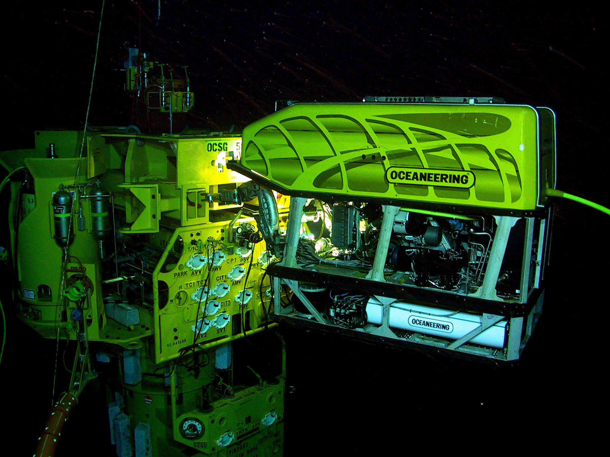
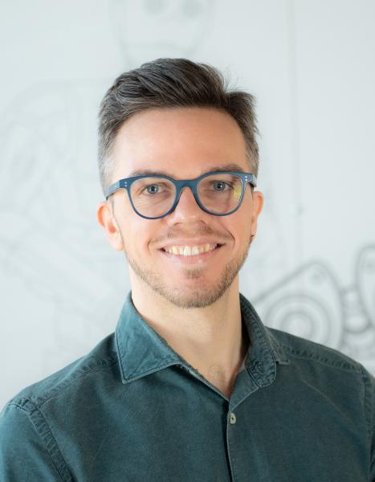
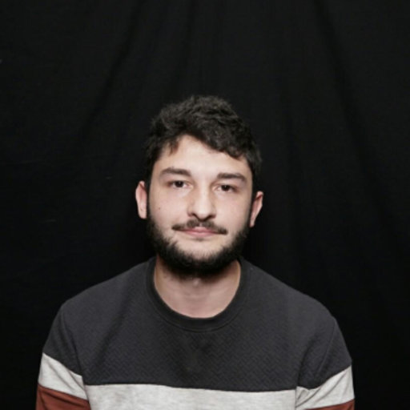
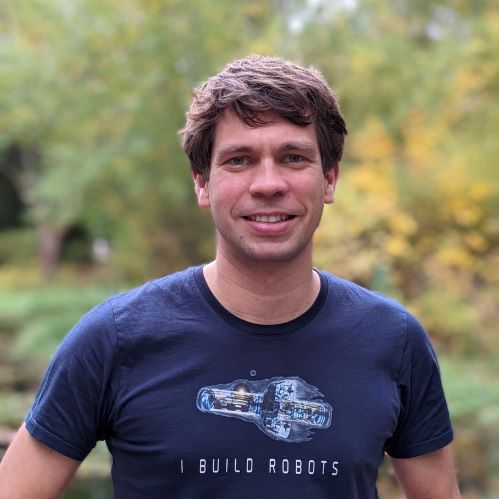
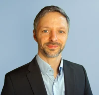
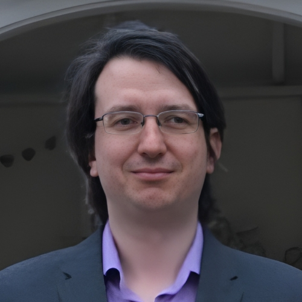
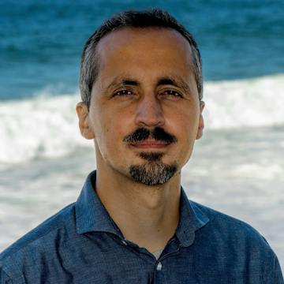
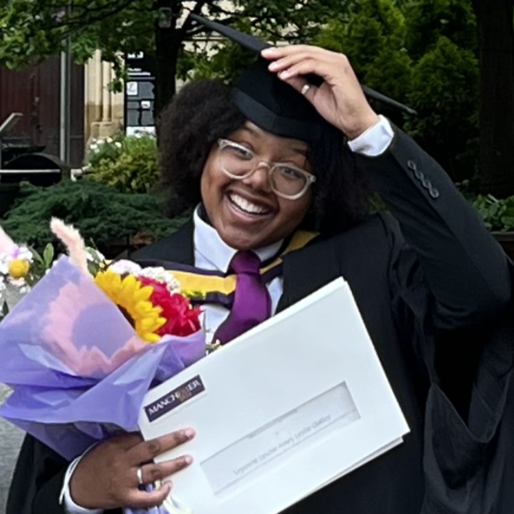
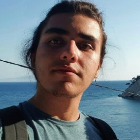

Build & integrate
Compact hardware, end-effectors and vehicle-manipulator coordination.
ICRA 2027 · Proposed half-day workshop
Small-scale Hardware and Robotics for Intervention and Manipulation in Practice
Dronification of Underwater Robotics
Bringing underwater interaction within reach of small teams. From accessible hardware to reliable autonomy in the field.

Institutions represented by our organizers and speakers

Underwater robots are becoming more accessible. Reliable manipulation is the next challenge.
Commercial vehicles, compact manipulators and open software are opening new possibilities in environmental sampling, aquaculture and infrastructure inspection. But assembling accessible components is only the beginning.
We bring researchers, technology providers and application users together to ask what it takes to make these systems useful beyond the lab.
What do we mean by small-scale? Systems that a few people can deploy, operate and recover with minimal support infrastructure.
Compact hardware, end-effectors and vehicle-manipulator coordination.
Underwater perception, contact-aware planning, control and shared autonomy.
Field robustness, failure recovery and reproducible evaluation in real applications.
A SHARED OUTCOME
Turn the challenge, talks and discussion into priorities for researchers, technology providers, integrators and application users.
Underwater manipulation meets lessons from aerial robotics and contact-aware autonomy.
LOUISIANA STATE UNIVERSITY
Underwater manipulation, modelling, perception and control

INRIA
Lessons transferred from aerial manipulation

HERIOT-WATT UNIVERSITY / NATIONAL ROBOTARIUM
Contact-aware autonomy and underwater sampling
THE SHRIMP CHALLENGE · IN SIMULATION
Bring your approach to underwater manipulation. A common platform, a shared task and two baselines to build on, without needing underwater hardware.
Explore the challenge
Talks, contributed work and a shared challenge feed into a focused discussion of what comes next.
The date, room and session time are to be confirmed. This schedule will shift if an afternoon slot is assigned.
| TIME | SESSION & FORMAT |
|---|---|
| 08:40 | Welcome & objectivesScope, guiding questions and the roadmap process |
| 09:20 | Invited talks ITwo talks · 15 minutes + 5 minutes Q&A each |
| 09:50 | Contributed presentations5-minute lightning talks and 2-minute poster pitches |
| 10:20 | Coffee & posters10 regular contributions + the top 3 challenge teams |
| 11:00 | Invited talks IITwo talks · 15 minutes + 5 minutes Q&A each |
| 11:20 | Simulation challengeSetup, selected results and shared lessons |
| 12:05 | Structured panelTwo prepared slides per panelist, open questions and moderated discussion |
| 12:25 | THE SHARED OUTCOMERoadblock & Action SynthesisPriorities, responsibilities and next steps |
| 12:30 | ClosingRecognition and follow-up |
Bringing together marine robotics, control, autonomy and application perspectives.


Technical University of Munich · ITR

University of Manchester
Hamburg University of Technology

Monterey Bay Aquarium Research Institute


LET’S MOVE UNDERWATER ROBOTICS FORWARD
Questions about the proposed workshop? Get in touch with the organizing team.